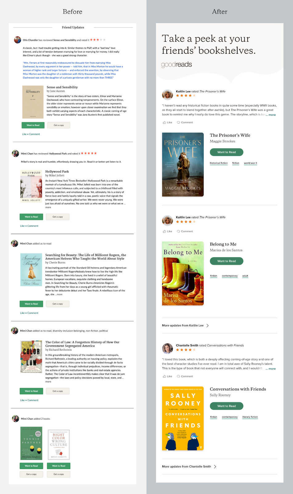
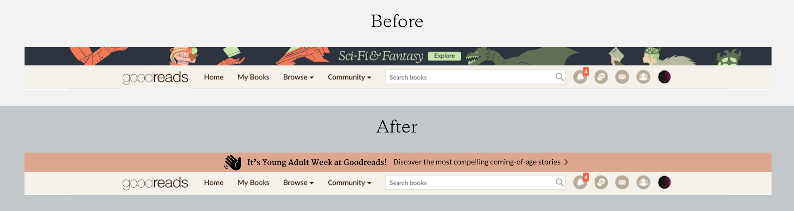
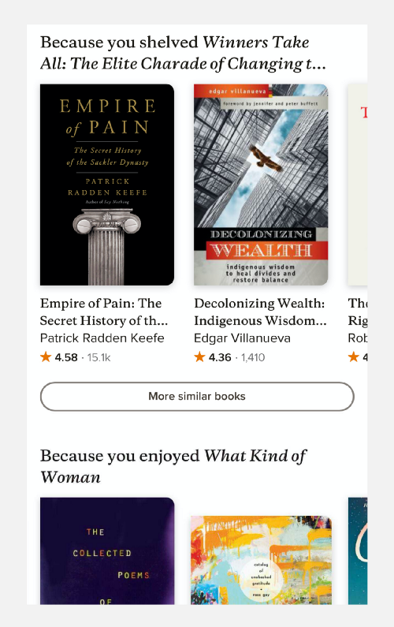
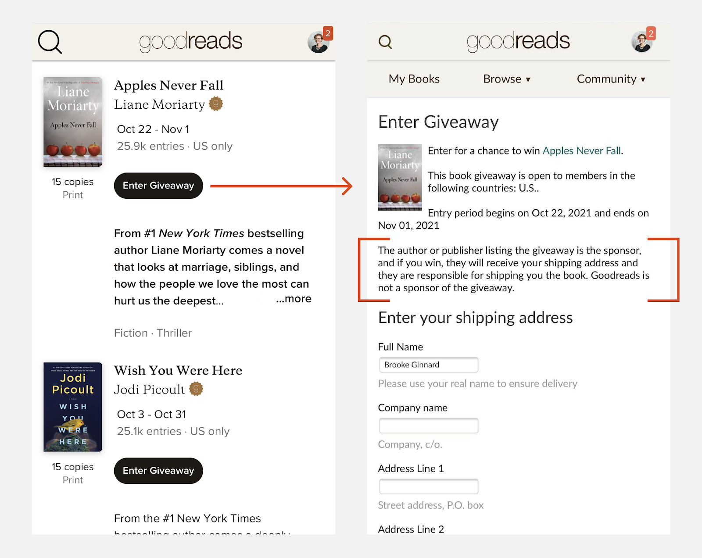
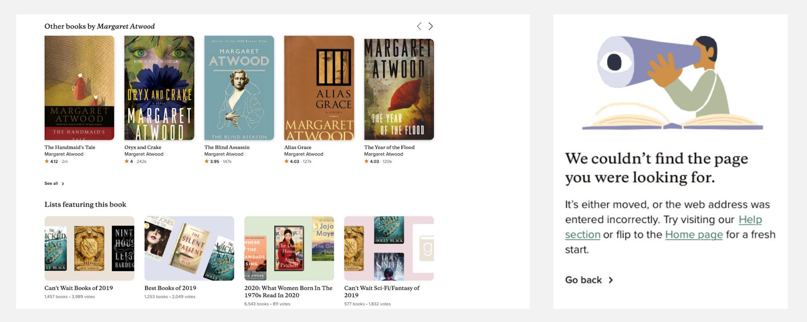

На данный момент если ваш дизайн не принимает во внимание ментальное здоровье пользователя, то его нельзя назвать ориентированным на человека.
Все мы знаем, насколько напряженной была наша жизнь в последнее время. Сейчас важно учитывать то, что помимо плохого дизайна, который вызывает у пользователей разочарование, двусмысленность также может усугублять их беспокойство.
При создании нового опыта взаимодействия дизайнеры продуктов пытаются учесть различные потребности клиентов. Но они часто забывают о том, какое влияние их работа может оказывать на психику людей.
В Goodreads (прим. сайт предоставляет свободный доступ к обширной базе данных книг, аннотаций, различных обзоров) начало пандемии совпало с его внутренней трансформацией. Было принято решение итеративно перестраивать основной CX (прим. Client experience, опыт клиента) с целью улучшить качество обслуживания. Был сделан акцент на инклюзивности и доступности дизайна с учетом заботы о ментальном здоровье людей.
Ниже мы рассмотрим пять способов поддержки психического здоровья наших клиентов на Goodreads, хотя это далеко не исчерпывающий список.
1. Дизайн с правильно расставленными акцентами должен быть лаконичным
Все люди очень заняты. Они думают о своих личных проблемах, о работе, испытывают стресс и беспокойство. У пользователей должна быть возможность быстро находить нужную информацию и при этом не сталкиваться с подавляющими изображениями или большим количеством текста. Это будет их раздражать, сбивать с толку и побуждать отказываться от опыта взаимодействия с продуктом.
В Goodreads мы создали новый минималистичный дизайн страницы обновлений, которая отображает новые отзывы о прочитанных книгах от рецензентов или авторов, на которых подписан пользователь. В обновленной версии акцент сделан на социальной активности, которую люди так хотели увидеть.
Прим. Каждое обновление состоит из имени рецензента, его отзыва на прочитанную книгу, рейтинга, который он ей присвоил, далее идет фотография и название книги, имя автора, ее краткое содержание, и призыв к действию — читать книгу или купить ее. Под именем рецензента может быть выложено несколько отзывов и рейтингов на разные книги.
Первоначальный дизайн отражал в обновлениях максимально возможное количество информации о каждой книге. Для людей, которые следят за множеством рецензентов или авторов, такой формат был слишком громоздким. К тому же вдумчиво написанные обзоры часто терялись в большом количестве других рецензий.Слишком подробный контент непреднамеренно скрывал важные для пользователя обновления.Чтобы соблюсти баланс между предоставлением полезной информации о книге и рецензиями в социальных сетях, длинные, написанные издателем описания каждой книги, были заменены на более простые теги с названием жанра.В итоге был сделан акцент на письменных обзорах, рейтингах и/или виртуальных книжных полках рецензентов, на которых подписан пользователь.
Клиенты также говорили о том, что им тяжело воспринимать несколько рецензий подряд от одного и того же человека. С учетом этого мы создали правило показывать только пару обновлений, которые сделаны одним рецензентом, со ссылкой на другие его действия.
2. Убедитесь, что пользователь хорошо ориентируется на вашем сайте
Мы стремимся к тому, чтобы клиенты были довольны продуктом. Нечеткие призывы к действию могут вызвать замешательство, беспокойство и даже недоверие.
Например, Goodreads упростили дизайн баннеров, которые используются для того, чтобы направлять людей к новому контенту и рекомендациям
Прим. сверху расположен первоначальный дизайн призыва к действию, а снизу обновленный
В предыдущей версии дизайна акцент был сделан на иллюстрации и тексте, а призыв к действию «Узнать больше» (англ. “Explore”) был слишком общим. Хотя творческий подход, который выражался в наличии изображения, нравился дизайнерам, для клиентов главная цель баннера выглядела нечетко. Они не были уверены в том, куда приведет их ссылка: к странице общего жанра или к целевой рекламной странице. На самом деле призыв к действию вел пользователей к новому контенту, который дизайнеры пытались таким образом продвигать.
Когда информация в тексте и призыве к действию стала более конкретной, клиенты начали лучше понимать контекст и то, куда он их приведет.
Несмотря на то, что иллюстрации, которые сопровождали призыв к действию, были интересными и соответствовали еженедельному жанровому контенту, стало понятно, что они слишком перегружают баннер и снижают его эффективность.
Минималистичный фон позволил снизить когнитивную нагрузку на клиентов за счет использования небольшой иконки в качестве наглядной визуальной подсказки. Расположение баннера оставили без изменений — в верхней части страницы, как это было в первоначальном варианте.
3. Пишите простым языком
Текст должен помочь людям интуитивно использовать продукт и устранить любую путаницу или беспокойство.
Написание хорошего UX текста означает удаление того, что не является строго необходимым. Это позволит пользователю быстро просматривать контент на сайте. Но простота отличного UX текста обманчива. Он работает на нескольких уровнях и помогает людям интуитивно понять, как использовать продукт в процессе взаимодействия с ним.
В новой бета-версии страницы предложения книг Goodreads были протестированы определенные заголовки, такие как «Вы отложили [Название книги] на свою книжную полку, поэтому вам могут быть интересны:» или «Вам понравилась [Название книги], поэтому предлагаем:». Они помогут пользователям легко перемещаться по странице и находить рекомендации, которые соответствуют их текущим запросам.
Эти заголовки позволяют клиентам интуитивно понять, что их рейтинги и действия по размещению книг на полках Goodreads используются для того, чтобы персонализировать их опыт. Таким образом, действия, которые они предпринимают в рамках сайта, влияют на рекомендации, которые они получают.

4. Демонстрируйте прозрачность в отношении данных клиентов
Следует уважать конфиденциальность пользователей и стремиться к тому, чтобы они чувствовали себя уверенно при предоставлении своих персональных данных. Запрашивайте только ту информацию, которая крайне необходима, и сообщайте посетителям, для чего она нужна и как будет использоваться. Эта прозрачность помогает избавить людей от беспокойства и позволит им получить полный доступ к функциями сайта.
Например, когда компания Goodreads просит пользователя предоставить адрес своей электронной почты для участия в розыгрыше бесплатных книг, важно, чтобы он понимал, что его адрес будет предоставлен только издателю-спонсору. В случае если клиент выиграет, этот издатель сможет отправить ему бесплатную книгу.
5. Указывайте пользователям направление их пути
В рамках продукта всегда нужно предоставлять клиентам варианты движения вперед, которые актуальны и персонализированы в зависимости от их опыта взаимодействия.
«Что мне теперь делать?» — этот вопрос должен свидетельствовать о том, что людям интересны все направления продукта, которые ведут их в равной степени к увлекательному опыту взаимодействия.
Вопрос не должен звучать так, как будто они почувствовали себя потерянными или потерпели неудачу. А если они все же где-нибудь застрянут, важно предоставить им возможность вернуться на правильный путь.
Вариантами указания пути могут быть соответствующие рекомендации или контент, как на странице новой книги Goodreads, которая находится на стадии ограниченного бета-тестирования. Или это может быть полезный текст, который будет подсказывать пользователям, куда обращаться за помощью.